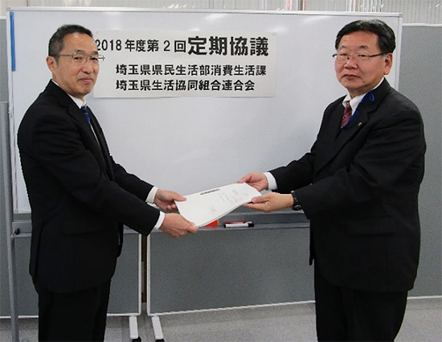

埼玉県と埼玉県生協連との第2回定期協議報告
2019年度埼玉県予算編成・行政執行に関する要望への回答を受領
埼玉県生活協同組合連合会
2月12日（火）16時より、埼玉県生協連会議室にて、2018年度埼玉県と埼玉県生協連との第2回定期協議を開催しました。
- 出席者
- 埼玉県県民生活部消費生活課：田中誠課長、松浦幹雄主幹、島村英雄主査
埼玉県生協連：岩岡宏保(会長理事)､大久保美紀(常務理事)、加藤(事務局長)
1. あいさつ

田中課長：今年度は、不当請求に関する消費者被害や儲け話に関する消費者被害が増加している。いずれも高齢者がターゲットになっている。ぜひ、生協連にも力を借りながら未然防止をすすめていきたい。
岩岡会長理事：私たちが事務局を務める埼玉県消費者団体連絡会と消費者委員会が共催するシンポジウムや、埼玉県消費者大会などに関する支援・協力について感謝したい。埼玉県と一緒にできることがあれば、やっていきたいと思っている。
2. 議題
- (1) 岩岡会長理事から埼玉県生協連の2019年度埼玉県生協連事業計画概要について説明をおこなった。2019年度も「平和とよりよき生活のため」を大切に「各会員生協の実践交流」「社会への発信」「幅広い連携の形成」を基本に据えること、3つの重点課題として「核兵器廃絶・平和・憲法の学習」「子どもの貧困や生活困窮者への支援」「消費者被害防止」に取り組むことを報告しました。
- (2) 埼玉県より、昨年実施した第1回定期協議時に提出した「2019年度埼玉県予算編成ならびに行政執行に関する要望」についての回答書を受領した。
- (3) 埼玉県より、今年度実施している生協検査について、今年度は4組合を予定しており、3組合について終了していること、それぞれの指摘項目について報告があった。報告のあった指摘項目は次のとおり。
- ① 組合員資格のない人(区域外)が、組合員として登録されていることへの指摘。
- ② 理事会への出席が少ない理事に関する指摘。
- ③ 監事会の監査計画はあるが、具体化されておらず、計画どおりにおこなわれていなかったことへの指摘。
- ④ 固定資産の管理不備に関する指摘。
- ⑤ 旅費精算が、規定に従わずにおこなわれていることに関する指摘。
- (4) それぞれの報告後、生協連が取り組む課題と埼玉県庁の各部局とのつながりに関することなどについて、懇談をおこなった。